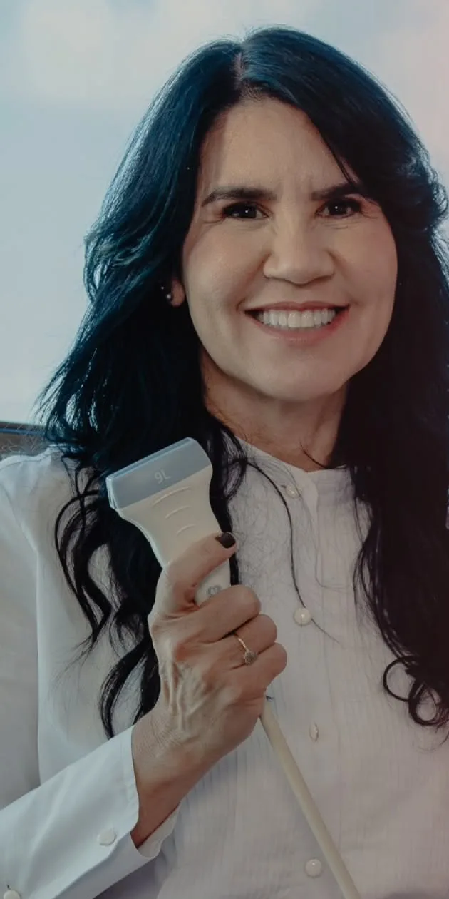

Pernas pesadas e cansadas
Sensação que piora ao fim do dia ou depois de muito tempo em pé ou sentada.
Avaliação vascular com ultrassom Doppler na própria consulta e tratamento de varizes e vasinhos com laser, espuma, endolaser e cirurgia, em um consultório pensado para você se sentir acolhida.
Esses sinais são comuns, mas não são normais. Uma avaliação vascular ajuda a entender a causa.
Sensação que piora ao fim do dia ou depois de muito tempo em pé ou sentada.
Pés e tornozelos que incham com frequência, principalmente no calor.
Pequenos vasos vermelhos ou arroxeados, em forma de teia, nas coxas e pernas.
Veias dilatadas, tortuosas e salientes, que podem incomodar e doer.
Desconforto e sensação de calor nas pernas, muitas vezes à noite.
Hematomas que aparecem com facilidade podem indicar fragilidade vascular.
Reconheceu algum desses sinais?
Agendar minha avaliaçãoNão existe uma única solução para varizes. A técnica é escolhida depois da avaliação, de acordo com o seu caso.
Exame que mostra como o sangue circula nas veias. É feito durante a própria consulta, para uma avaliação mais completa.
Diagnóstico Quero fazer o DopplerAtua sobre a pele para tratar vasinhos e pequenos vasos de forma precisa, sem cortes.
Vasinhos Quero saber sobre o laserAplicação de espuma esclerosante para tratar varizes de diferentes calibres, das mais simples às mais avançadas.
Varizes Quero saber sobre espumaTratamento das veias safenas por dentro do vaso, com uma fibra de laser, sem a necessidade de retirá-las.
Safenas Quero saber sobre endolaserRetirada das varizes por pequenas incisões (flebectomia), com planejamento e acompanhamento em todas as etapas.
Varizes calibrosas Quero saber sobre a cirurgiaCombina laser e escleroterapia em um mesmo procedimento, realizado no consultório.
No consultório Quero saber sobre ClaCS
A Dra. Elizabeth Moreno, a Dra. Beth, é médica dedicada à saúde vascular, com foco no diagnóstico e no tratamento de varizes, vasinhos e outras doenças das veias das pernas.
Ela recebe os pacientes em Boa Viagem em um consultório que trata como uma segunda casa, pensado em cada detalhe para que você se sinta acolhida, cuidada e segura.
Na mídia
Respostas rápidas para as perguntas que mais chegam ao consultório.
Quando as pernas ficam pesadas, cansadas ou inchadas com frequência, quando aparecem vasinhos ou varizes, ou quando surgem manchas roxas sem motivo aparente. A avaliação ajuda a entender a causa e a definir o cuidado mais adequado.
Sim. No consultório da Dra. Beth, o ultrassom Doppler pode ser realizado durante a consulta, o que permite uma avaliação mais completa sem precisar marcar o exame em outro lugar.
Não. Varizes podem indicar doença venosa e vir acompanhadas de sintomas como peso, dor, inchaço e queimação. Por isso merecem avaliação médica, e não apenas cuidado estético.
Depende da técnica indicada. Alguns tratamentos são feitos no próprio consultório; outros exigem centro cirúrgico. A Dra. Beth explica na consulta como será a recuperação no seu caso.
Podem. Dor e inchaço que surgem de repente em uma só perna são sinais de alerta e exigem avaliação imediata em um serviço de urgência.
Fácil acesso na Avenida Conselheiro Aguiar, em Boa Viagem. Fale com a equipe e escolha o melhor horário para você.